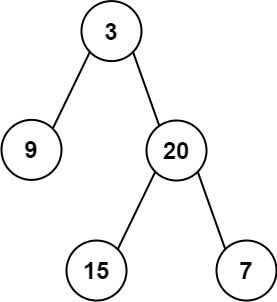

12、剑指 Offer 07. 重建二叉树
一、题目
剑指 Offer 07. 重建二叉树 难度中等
输入某二叉树的前序遍历和中序遍历的结果，请构建该二叉树并返回其根节点。
假设输入的前序遍历和中序遍历的结果中都不含重复的数字。
示例 1:

Input: preorder = [3,9,20,15,7], inorder = [9,3,15,20,7]
Output: [3,9,20,null,null,15,7]
示例 2:
Input: preorder = [-1], inorder = [-1]
Output: [-1]
限制：
0 <= 节点个数 <= 5000
注意：本题与主站 105 题重复：https://leetcode-cn.com/problems/construct-binary-tree-from-preorder-and-inorder-traversal/
二、解法
2.1、递归法
核心思想：
对于任意一颗树而言，前序遍历的形式总是如下所示，且根节点总是前序遍历中的第一个节点。
[ 根节点, [左子树的前序遍历结果], [右子树的前序遍历结果] ]
而中序遍历的形式总是
[ [左子树的中序遍历结果], 根节点, [右子树的中序遍历结果] ]
只要我们在中序遍历中定位到根节点，那么我们就可以分别知道左子树和右子树中的节点数目。由于同一颗子树的前序遍历和中序遍历的长度显然是相同的，因此我们就可以对应到前序遍历的结果中，对上述形式中的所有左右括号进行定位。
这样以来，我们就知道了左子树的前序遍历和中序遍历结果，以及右子树的前序遍历和中序遍历结果，我们就可以递归地对构造出左子树和右子树，再将这两颗子树接到根节点的左右位置。
细节
在中序遍历中对根节点进行定位时，一种简单的方法是直接扫描整个中序遍历的结果并找出根节点，但这样做的时间复杂度较高。我们可以考虑使用哈希表来帮助我们快速地定位根节点。对于哈希映射中的每个键值对，键表示一个元素（节点的值），值表示其在中序遍历中的出现位置。在构造二叉树的过程之前，我们可以对中序遍历的列表进行一遍扫描，就可以构造出这个哈希映射。在此后构造二叉树的过程中，我们就只需要 O(1) 的时间对根节点进行定位了。
复杂度分析：
时间复杂度：O(n)，其中 n 是树中的节点个数。
空间复杂度：O(n)，除去返回的答案需要的 O(n) 空间之外，我们还需要使用 O(n) 的空间存储哈希映射，以及 O(h)（其中 h 是树的高度）的空间表示递归时栈空间。这里 h < n，所以总空间复杂度为 O(n)。
代码：
class Solution {
// 前序遍历值
int[] preorder = null;
// 中序遍历值
int[] inorder = null;
// 保存中序遍历中每个元素各自出现的下标，方便定位
HashMap<Integer, Integer> map = new HashMap<>();
public TreeNode buildTree(int[] preorder, int[] inorder) {
// 初始化参数
this.preorder = preorder;
this.inorder = inorder;
for (int i = 0; i < inorder.length; i++) {
map.put(inorder[i], i);
}
// 递归调用
TreeNode result = myBuildTree(0, preorder.length - 1, 0, inorder.length - 1);
return result;
}
/**
* 给定一个树的前序遍历与中序遍历，递归生成树结构
*
* @param preorderStartIndex 前序遍历下标区间 start
* @param preorderEndIndex 前序遍历下标区间 end
* @param inorderStartIndex 中序遍历下标区间 start
* @param inorderEndIndex 中序遍历下标区间 end
* @return
*/
public TreeNode myBuildTree(int preorderStartIndex, int preorderEndIndex, int inorderStartIndex, int inorderEndIndex) {
if (preorderStartIndex > preorderEndIndex || inorderStartIndex > inorderEndIndex) {
// 如果下标超限,则说明该节点为 null
return null;
}
// 先取得根节点的值
int rootVal = this.preorder[preorderStartIndex];
// 构造出一个新节点
TreeNode node = new TreeNode(rootVal);
// 获取根节点的值处于中序遍历中的下标
int rootIndex = this.map.get(rootVal);
// 计算左子树元素的个数
int leftSubtreeSize = rootIndex - inorderStartIndex;
// 递归处理左子树
node.left = myBuildTree(preorderStartIndex + 1, preorderStartIndex + leftSubtreeSize, inorderStartIndex, rootIndex - 1);
// 递归处理右子树
node.right = myBuildTree(preorderStartIndex + 1 + leftSubtreeSize, preorderEndIndex, rootIndex + 1, inorderEndIndex);
return node;
}
}
2.2、迭代法（未完待续）
核心思想：
复杂度分析：
代码：
// 迭代法
class Solution {
public TreeNode buildTree(int[] preorder, int[] inorder) {
if (preorder == null || preorder.length == 0) {
return null;
}
// 初始化根节点
TreeNode root = new TreeNode(preorder[0]);
Deque<TreeNode> stack = new LinkedList<TreeNode>();
stack.push(root);
int inorderIndex = 0;
for (int i = 1; i < preorder.length; i++) {
int preorderVal = preorder[i];
TreeNode node = stack.peek();
// 用前序数组一直构建左子树
if (node.val != inorder[inorderIndex]) {
node.left = new TreeNode(preorderVal);
stack.push(node.left);
} else {
// 碰到了inorder[inorderIndex]，表示到了左下角，这时就需要往上走并处理右子树
while (!stack.isEmpty() && stack.peek().val == inorder[inorderIndex]) {
node = stack.pop();
inorderIndex++;
}
node.right = new TreeNode(preorderVal);
stack.push(node.right);
}
}
return root;
}
}